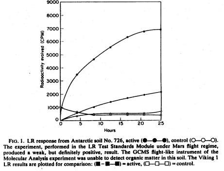
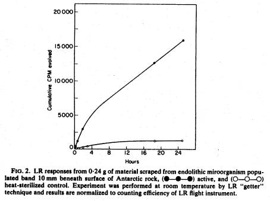

Antarctic Soil No. 726
and Implications for the Viking Labeled Release Experiment
GILBERT V. LEVIN AND
PATRICIA A. STRAAT*
Biospherics
Incorporated, 4928
Wyaconda Road, Rockville, Maryland 20852, U.S.A.
(Received 30 October 1980)
The
failure of the Viking Molecular Analysis experiment (Biemann et al., 1976)
to detect organic matter on Mars is primarily responsible for the widespread
belief (Klein, 1979; Young, 1979) that a chemical, rather than a biological,
agent caused the response obtained by the Labeled Release (LR) life detection
experiment (Levin & Straat, 1976a, 1977, 1979a ).
In
discussions concerning whether the relative sensitivities of the Molecular
Analysis and the LR experiments could permit a biological interpretation of the
Viking LR results, it was stated (Biemann et al., 1976) that 106 typical
prokaryotic cells contain the minimal amount of organic matter detectable by
the gas chromatograph-mass spectrometer (GCMS) used in the Molecular Analysis
experiment. However, it was pointed out (Biemann, 1976) that the mass of
organic detritus from dead cells present in terrestrial soils containing living
organisms exceeds the living biomass by ten to one hundred fold. The
accumulated dead organic matter would, thus, produce a signal in the GCMS even
though the living cells, by themselves, would not (Biemann, 1976). The
sensitivity of the radiorespirometric method, its ability to detect small
populations of microorganisms even prior to the onset of growth, and the
biological nature of the response have been demonstrated (Levin, 1963, 1966;
Levin & Heim, 1965; Levin & Straat, 1976b ). Although the LR
technique had detected (Levin & Straat, 1976b) as few as 50
colony-forming units in a terrestrial soil sample, it was doubted that
LR-detectable levels of indigenous microorganisms could, in fact, exist in a
soil in which the total organic content was below the GCMS limit of detection.
We wish to report a new development that provides the first experimental
evidence resolving this doubt.
A
recent report (Biemann, 1979) on the sensitivity of the Molecular Analysis
experiment gave results obtained when several sterile or sparsely populated
Antarctic soils were tested in a flight-like GCMS instrument. One of the soils
failed to produce a detectable response in that instrument. This soil,
identified (Lavoie, 1979) as Antarctic soil No. 726, is a documented (Cameron,
1971) sample maintained by NASA, containing 0.03% organic carbon (which,
interestingly, did not produce detectable organic vapors when pyrolyzed in the
GCMS (Lavoie, 1979)), and failed to produce microbial colonies when inoculated
in classical test media.
Prior
to the landing of the Viking Spacecraft, we tested a variety of soils in the
flight-like LR instrument, the Test Standards Module (TSM), to assemble a
“library of responses” for comparison with the LR data to be obtained from
Mars. The soils tested included sterile soils (e.g. lunar soil, Surtsey soil,
soon after formation, sterile Antarctic soil No. 542 (Cameron, 1971)) and
several low population Antarctic soils. Stringent aseptic techniques
established for TSM work were rigorously followed. In some cases, we obtained
small, but positive, labeled release responses in Antarctic soils not producing
colonies when tested by classical methods. Growth is required by classical
methods whereas metabolism in the absence of growth is sufficient for an LR
response (Levin, 1966).
Upon learning of the new GCMS sensitivity test, we re-examined our response library. We found that one of the soils which gave a weak, but clearly positive, response in the TSM was the same Antarctic soil No. 726 reported negative by the GCMS. Figure 1 shows that response and its sterilized control (heated at 160°C for 3 hr according to the flight sterilization regime). For comparison, the Viking Lander 1 Cycle 1 LR response is shown to the same scale.

Thus,
the ability of the LR experiment to detect indigenous micro- organisms in soil
containing levels of organic matter undetectable by the Viking Molecular
Analysis experiment has been demonstrated. Although a variety of reports has
been published claiming to have “simulated” the LR Mars results chemically or
physically none, in fact, has published data simulating the peculiar, and
life-like, thermal sensitivity shown in the LR Mars data. Taken together with
the negative results of our three and a half year effort (Levin & Straat,
1979b, 1980,1981) to account satisfactorily for the LR Mars data by
non-biological means, this finding supports our position that a biological
interpretation of the LR experiment must still be considered.
While
we were able to impose rigorous conditions to make hydrogen peroxide react with
the LR nutrient in a manner approaching the kinetics and thermal sensitivity
shown by the Mars agent, this required assumptions about constituents and
properties still undetermined for Mars soil. Moreover, the reaction did not
occur when it was attempted on the Mars analog soils developed by the Viking
Inorganic Analysis Team from its Mars data. Nor were we able to sustain
significant quantities of hydrogen peroxide on soils under simulated Mars
ultraviolet light to make the formation and accumulation of that oxidant likely
on Mars.
That
suitable models exist for possible ecological niches on Mars is indicated in
Fig. 2. The LR “getter” technique (Levin & Straat, 1976b) was used
on 0.24 g of scrapings from an endolithic microorganism-bearing band 10 mm
beneath the surface of a rock (Friedmann & Ocampo, 1976) brought to our
laboratory from the dry valleys of Antarctic. As shown (Fig. 2), a positive
response was obtained whereas a duplicate portion of the sample heated to 200°C
for 1 hr did not respond. The results, plotted to a scale adjusting counting
efficiency to correspond to that of the LR flight instrument, show that the
magnitude of the response is comparable to that obtained on Mars. Other
terrestrial models, discussed in detail elsewhere (Levin & Straat, 1979b),
include lichens which are capable of deriving water solely from atmospheric
vapor (Lange, Schulze & Koch, 1980).

We
thank Bruce Connor for performing the LR TSM test on Antarctic soil No. 726. We
are indebted to E. I. Friedmann and R. Ocampo for bringing the Antarctic rock
containing endolithic organisms to our laboratory and for removing the portions
tested. E. Merek kindly supplied Antarctic Soil No. 726 from the Ames Research
Center Antarctic soil bank.
BIEMANN,
K. (1976). Viking Molecular Analysis Team, presentation to Viking Flight Team. BIEMANN, K. (1979). I. mol. £vol. 14, 65.
BIEMANN,
K., ORO, J., TOULMIN, III, P ., ORGEL, L. E., NIER, A. O., ANDERSON, D. M.,
SIMMONDS, P. G., FLORY, D., DIAZ, A. V., RUSHNECK, D. R. & BILLER, J. A.
(1976). Science, 194, 72.
Op.
cit. above, Note 19.
CAMERON,
R. E. (1971). In Research in the Antarctic. (L. O. Quam & H. D.
Porter eds) Washington D.C.: Am. Assoc. Adv. Sci.
FRIEDMANN,
E. I. & OCAMPO, R. (1976). Science 193, 1247.
KLEIN, H. P. (1979). J. mol. Evol. 14,161.
LANGE,
C. L., SCHULZE, E. & KOCH, W. (1970). Flora Abt. 159, 38.
LAVOIE, J. M. (1979). Ph.D. Thesis, Massachusetts Institute of
Technology, Cambridge.
LEVIN,
G. V. (1963). Microbiological Determinations with Radioisotopes, in Advances
in Applied Microbiology, Vol. 5, p. 95. New York: Academic Press.
LEVIN,
G. V. (1966). Extraterrestrial Life Detection with Isotopes and Some Aerospace
Applications, in Radioisotopes for Aerospace Part 2. Systems and
Applications, p. 342. New York: Plenum Press.
LEVIN,
G. V. & HElM, A. H. (1965). Gulliver and Diogenes-Exobiological Anthithesis,
in Life Sciences and Space Research III. (M. Florkin, ed.) p. 105.
Amsterdam: North-Holland.
LEVIN,
G. V. & STRAAT, P. A. (1976a). Science 194, 1322.
LEVIN,
G. V. & STRAAT, P. A. (1976b). Origins Life 7,
293.
LEVIN,
G. V. & STRAAT, P. A. (1977). J. Geophys. Res. 82, 4663.
LEVIN,
G. V. & STRAAT, P. A. (1979a). J. mol. Evol. 14, 167.
LEVIN,
G. V. & STRAAT, P. A. (1979b). Final Report, NASA Contract
No. NASW-3162.
LEVIN,
G. V. & STRAAT, P. A. (1980). Final Report, NASA Contract No. NASW-3249.
LEVIN,
G. V. & STRAAT, P. A. (1981). Icarus in press.
YOUNG,
R. S. (1979). J. mol. Evol. 14, 233.